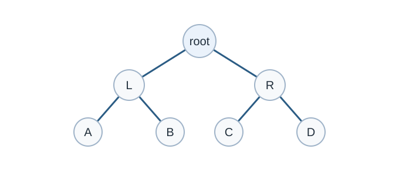

Binary Search Tree
คำอธิบาย
Binary search tree (BST) คือ binary tree ที่ทุก node มีคุณสมบัติ
ทุกค่าใน subtree ซ้าย น้อยกว่าค่าของ node
ทุกค่าใน subtree ขวา มากกว่าค่าของ node
คุณสมบัตินี้ทำให้ค้นหาได้เหมือน binary search: ที่แต่ละ node รู้ทันทีว่าค่าที่หาต้องอยู่ฝั่งไหน จึงตัดอีกฝั่งทิ้งได้ทั้งหมด

Binary tree shape used as a basis for binary search trees. Original diagram for this guide.
Operations
Search
เริ่มที่ root ถ้าค่าที่หาน้อยกว่าให้ไปทางซ้าย มากกว่าไปทางขวา เท่ากันคือเจอ ถ้าเดินถึงช่องว่างแปลว่าไม่มี
Insert
เดินแบบเดียวกับ search จนถึงช่องว่าง แล้วใส่ node ใหม่ตรงนั้น
Delete
หา node ที่จะลบก่อน แล้วแบ่งเป็นสามกรณี
เป็นใบ (leaf): ลบได้เลย
มีลูกเดียว: ให้ลูกขึ้นมาแทนที่
มีสองลูก: หา successor คือค่าน้อยสุดใน subtree ขวา (เดินขวาหนึ่งครั้งแล้วซ้ายจนสุด) นำค่านั้นมาแทน แล้วลบ successor ตัวเดิม ซึ่งมีลูกไม่เกินหนึ่งตัวจึงเข้ากรณีที่ 1 หรือ 2
Traversal
Inorder traversal (ซ้าย, node, ขวา) ของ BST ให้ค่าที่ เรียงจากน้อยไปมาก เสมอ
ลอง insert, search และ delete (ลองลบ 50 ซึ่งมีสองลูก) แล้วกด “ขั้นถัดไป” เพื่อดูเส้นทางที่เดิน จากนั้นเลือกตัวอย่าง “ใส่ค่าที่เรียงแล้ว” เพื่อดูว่า tree เสียรูปอย่างไร
ความเร็วขึ้นกับความสูง
ทุก operation เดินจาก root ลงไปหนึ่งเส้นทาง จึงใช้เวลา O(h) เมื่อ h คือความสูงของ tree
ถ้า tree สมดุล (balanced) h \approx \log_{2}n ทุก operation เป็น O\left( \log n \right)
ถ้าใส่ค่าที่ เรียงแล้ว เช่น 10, 20, 30, … ทุกค่าจะต่อไปทางขวาเรื่อย ๆ จน tree กลายเป็นเส้นตรง h = n - 1 ทุก operation ช้าเป็น O(n)
Self-balancing BST เช่น AVL tree และ red-black tree
จะปรับรูปร่าง (rotation) หลังทุก insert/delete ให้ความสูงเป็น O\left( \log n \right) เสมอ set
และ map ใน STL คือ red-black tree ในการแข่งขันจึงแทบไม่ต้องเขียน
BST เอง แต่ต้องเข้าใจว่าทำไมมันเร็ว
Implementation
struct Node {
int key;
Node* left = nullptr;
Node* right = nullptr;
};
Node* insert(Node* t, int x) { // คืน root ใหม่ของ subtree
if (t == nullptr) return new Node{x};
if (x < t->key) t->left = insert(t->left, x);
else if (x > t->key) t->right = insert(t->right, x);
return t; // x ซ้ำ: ไม่ใส่
}
bool contains(Node* t, int x) {
while (t != nullptr) {
if (x == t->key) return true;
t = (x < t->key) ? t->left : t->right;
}
return false;
}
Node* erase(Node* t, int x) {
if (t == nullptr) return nullptr;
if (x < t->key) {
t->left = erase(t->left, x);
} else if (x > t->key) {
t->right = erase(t->right, x);
} else if (t->left == nullptr || t->right == nullptr) { // กรณี 1 และ 2
Node* child = t->left ? t->left : t->right;
delete t;
return child;
} else { // กรณี 3
Node* s = t->right;
while (s->left) s = s->left; // successor
t->key = s->key;
t->right = erase(t->right, s->key);
}
return t;
}
void inorder(Node* t) {
if (t == nullptr) return;
inorder(t->left);
cout << t->key << ' ';
inorder(t->right);
}
int main() {
Node* root = nullptr;
for (int x : {50, 30, 70, 20, 40, 60, 80}) root = insert(root, x);
root = erase(root, 50);
inorder(root); // 20 30 40 60 70 80
cout << '\n' << contains(root, 40) << contains(root, 50); // 10
}ลองคิด
ใส่ 8, 3, 10, 1, 6 ลง BST ว่างตามลำดับ preorder traversal คืออะไร
ลำดับการ insert แบบใดทำให้ BST ที่มี 7 node สูงน้อยที่สุด
เฉลย
8 3 1 6 10ใส่ค่ากลางก่อนแล้วค่อยใส่ค่ากลางของแต่ละครึ่ง เช่น 4, 2, 6, 1, 3, 5, 7 ได้ความสูง 2 (สามชั้น)
โจทย์ฝึกฝน (Practice Problems)
ลองทำโจทย์เหล่านี้จาก CSES Problem Set เพื่อฝึกใช้ทักษะจากบทนี้ (ใช้
set/multiset ซึ่งเป็น balanced BST)
โจทย์เพิ่มเติม: CSES Problem Set และ programming.in.th